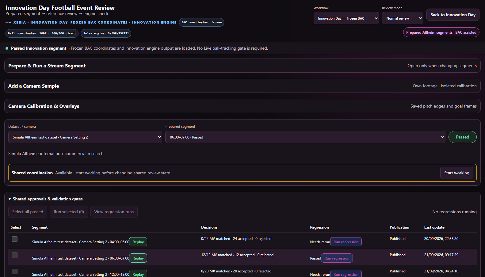
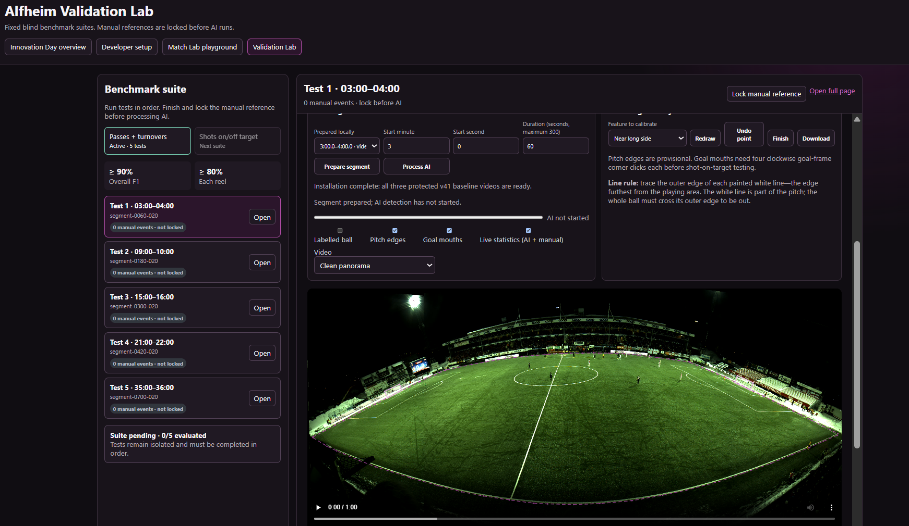

Affordable match intelligence
Every match tells a story. AI helps clubs read it.
Frozen BAC ball coordinates, YOLO player context, and a reviewed football rules engine turn panoramic match video into practical statistics for amateur coaches. Separate Live R&D is improving raw-video ball evidence.
Completed passes
Working inference
Possession changes
Working inference
Live match snapshot
Illustrative values
Red/white
Passes87
Turnovers11
On target3
Off target2
Black
Passes79
Turnovers14
On target1
Off target3
Why it matters
Reduce hours of manual match review and make useful analysis accessible without professional-league infrastructure.

Football Event Review
Video-first M#/E# comparison, optional C# diagnostics, and guarded publication
Working locally
01
Capture
Panoramic match video
02
Context
Frozen BAC ball + YOLO players
03
Understand
Tracks become events
04
Improve
Human-checked insights

Query By Probability
Query only relevant secondary-camera frames when primary confidence drops
Future architecture